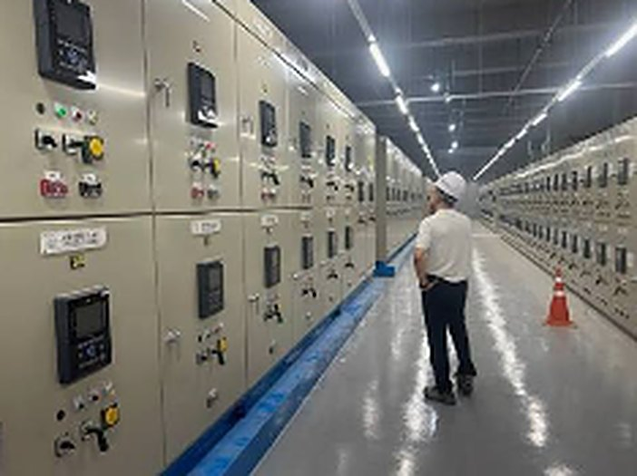

정확한 판단은 건물 정보와 현장 확인 후 안내합니다.
ICT facility performance inspection통신이 멈추면
통신이 멈추면
건물이 멈춥니다.
연면적 5,000㎡ 이상 건축물의 새 법정 의무.
성능점검·유지점검·관리자 선임까지 1년 계약 하나로 끝냅니다.
구내통신선로 · 방송공동수신 · 이동통신 구내선로 · CCTV · 무선통신보조설비
TELECOM ROOM / MDF · IDF · NVR
LINE 01-48 : OK
LOSS 0.3dB
LOSS 0.3dB
REC ● 32CH · HDD OK
B1-B4 SIGNAL : GOOD
측정값과 사진으로 남깁니다.
서류만 만드는 점검은 하지 않습니다.
설비 구성 이해를 위한 개념 일러스트서류만 만드는 점검은 하지 않습니다.
01대상 여부 무료 확인
021년에 두 번 방문
03관리자 선임까지 위탁
01 / Find your situation우리 건물은
우리 건물은
지금 어떤 상황인가요?
상황을 선택하면 확인할 내용과 준비할 자료가 나옵니다. 새로 생긴 제도라 대상인지 모르는 건물이 많습니다.
02 / Service scope법정 의무 세 가지와
법정 의무 세 가지와
통신 계통 보수까지.
성능점검·유지점검·관리자 선임은 1년 계약으로,
점검에서 나온 문제는 계통별로 고칩니다.
성능점검 · 연 1회
설비 작동 상태를 측정하고 노후도를 평가해 개선계획까지 보고서로 작성합니다. 구내통신·방송공동수신·정보통신 설비가 기준에 맞게 운영되는지 진단합니다.
성능 측정노후도 평가개선계획보고서
유지점검 · 연 2회
반기마다 설비별 외관과 동작을 확인하고 점검표에 기록합니다. 첫 방문에 성능점검과 함께 하고, 6개월 뒤 한 번 더 점검합니다.
반기 1회외관·동작점검표 기록기록 5년 보존
유지보수·관리자 선임
건물 연면적에 맞는 등급의 정보통신기술자를 선임하고 구청에 신고해야 합니다. 전문업체에 위탁하면 선임한 것으로 인정되고, 선임신고까지 대행합니다.
위탁 선임선임신고 대행설비 현황표연간 계획서
통신 계통 보수 · 공사
구내 네트워크·선로, CCTV·주차관제, 방송·소방 연동, 재난 무선통신보조설비까지. 단선·열화된 지점만 찾아 최소 비용으로 정상화합니다.
MDF·IDFCCTV·NVR방송 PALCX·중계기
점검 대상 설비: 구내통신선로설비 · 방송공동수신설비 · 이동통신 구내 선로 · 정보통신 인입설비 · 통신용 배관·배선 · 단자함·집중구내통신실
03 / How it works1년에 두 번 방문,
1년에 두 번 방문,
계약 하나로 끝납니다.
첫 방문에 성능점검과 상반기 유지점검을 같이 하고, 6개월 뒤 한 번 더 점검합니다.
관리자 선임까지 맡으니 1년 계약 하나로 법정 의무가 모두 해결됩니다.
01 / CONTRACT
계약 직후
관리자 선임(위탁)·신고 대행
설비 현황표 · 연간 계획서
02 / VISIT 1
1차 방문
성능점검 + 유지점검 1차
성능점검 보고서 · 점검표
03 / VISIT 2
2차 방문 (6개월 뒤)
유지점검 2차
점검표 2차
04 / RECORD
기록 보존
점검 기록 5년 보존
구청 요청 시 제출
「정보통신공사업법」 제37조의2·제37조의3에 따른 의무입니다. 현장을 보지 않고 서류만 만드는 점검은 기록 거짓 작성으로 과태료 대상입니다.
DATA / Manager appointment연면적별 관리자 선임 기준과
연면적별 관리자 선임 기준과
적용 시점
큰 건물부터 단계적으로 적용됩니다. 우리 건물 연면적이 어느 구간인지 먼저 확인하세요.
| 연면적 | 선임 자격 | 시행일 | 과태료 유예 |
|---|---|---|---|
| 6만㎡ 이상 | 특급 기술자 | 2025.7.19. | 2026.7.18. 종료 → 지금 부과 대상 |
| 3만㎡ 이상 6만㎡ 미만 | 고급 이상 | 2025.7.19. | 2026.7.18. 종료 → 지금 부과 대상 |
| 1.5만㎡ 이상 3만㎡ 미만 | 중급 이상 | 2026.7.19. | 2027.1.18.까지 (구청 안내 기준) |
| 1만㎡ 이상 1.5만㎡ 미만 | 중급 이상 | 2026.7.19. | 2027.1.18.까지 (구청 안내 기준) |
| 5천㎡ 이상 1만㎡ 미만 | 초급 이상 | 2027.7.19. | 시행 전 — 사전 예약 접수 |
- 선임 인원은 1명이고, 인정교육 20시간을 이수한 기술자여야 합니다. 기술자 1명은 건물 5곳까지 겸할 수 있습니다.
- 아파트 등 공동주택, 초·중·고 학교는 대상이 아닙니다.
- 1만~3만㎡ 구간 유예기한은 자료마다 다르게 적혀 있습니다(강남구·포항시는 2027.1.18., 일부 민간 자료는 2026.7.18. 종료). 계약 전 해당 구청 안내를 확인해 알려드립니다.
04 / Know the scope통신 계통별로
통신 계통별로
점검하고 고칩니다.
라인 하나가 죽었다고 배관을 새로 깔거나 장비를 통째로 바꾸지 않습니다.
| 통신 계통 | 점검 · 보수 항목 | 시공 포인트 |
|---|---|---|
| 구내 네트워크 · 선로 | MDF·IDF 패치판넬 정비, 노후 UTP·광케이블 포설과 인출구 증설, 데이터 선로 단선·쇼트 측정과 복구, 백본 스위치 설정 | 랜 계측기로 데이터 전송 손실률 검증 |
| CCTV · 주차관제 | 카메라(IP·가변렌즈) 각도 조정과 렌즈 클리닝, NVR/DVR 하드디스크 점검, 차량번호인식기·차단기 연동 선로 수리 | 사각지대 없는 시야각, 야간 저조도 선명도 조정 |
| 방송(PA) · 소방 연동 | 안내방송 앰프 출력 밸런스, 스피커 선로 임피던스 측정과 합선 보수, 화재 수신기 연동 비상방송 패널 보수 | 한 층 단락에도 다른 층 방송이 되는 단락 보호 시공 |
| 재난 무선통신보조설비 | 누설동축케이블(LCX) 탈락 보수, 중계기(부스터) 전원·신호 증폭도 계측, 지상 안테나·분배기 수밀 점검 | 지하 무전 음영지역 차단, 소방 점검 지적 예방 |
점검에서 나온 개선 항목은 견적 후 진행하며, 성능점검 계약과 별도입니다.
05 / Cost guide비용보다 먼저,
비용보다 먼저,
대상인지부터 확인하세요.
새로 생긴 제도라 대상인지 모르는 건물이 많습니다. 건물 정보만 알려주시면 적용 여부와 비용을 바로 안내해 드립니다.
대상 여부 · 비용 문의 ↗1년 계약에 포함되는 것
1년 계약 하나로
성능점검 연 1회 + 유지점검 연 2회 + 관리자 선임(위탁)
비용은 연면적과 설비 규모에 따라 정해집니다.
- 관리자 선임(위탁) 및 선임신고 대행
- 설비 현황표 작성, 연간 계획서 수립
- 1차 방문: 성능점검 보고서 + 유지점검표 1차
- 2차 방문(약 6개월 뒤): 유지점검표 2차
- 개선·보수 공사는 점검 후 별도 견적
06 / Legal duty미루면 바로
CHECK / 01 CHECK / 02 CHECK / 03
미루면 바로
과태료 대상입니다.
「정보통신공사업법」에 따른 과태료 기준입니다.
300만 원
유지보수·관리자를 선임하지 않거나, 성능점검·유지점검을 하지 않거나, 점검 기록을 거짓으로 작성하면 300만 원 과태료 대상입니다.
150만 원
점검 기록을 5년 동안 보존하지 않으면 150만 원 과태료 대상입니다.
100만 원
관리자 선임을 신고하지 않거나, 구청 요청에 기록을 제출하지 않으면 100만 원 과태료 대상입니다.
시행일과 유예 기한은 연면적 구간과 지자체 안내에 따라 다를 수 있습니다. 계약 전 해당 구청 안내를 확인해 알려드립니다.
07 / Field situations통신 장애가 다르면,
통신 장애가 다르면,
확인할 곳도 다릅니다.
성능점검·보수 현장에서 자주 만나는 상황을 정리한 진단 시나리오입니다.
특정 층만
인터넷이 자주 끊김
- 구분할 문제
- 백본·스위치 문제인지, 해당 층 선로 문제인지 구분
- 확인할 계통
- MDF → 층간 IDF 패치판넬 → UTP 선로 → 인출구
- 작업 후 확인
- 전송 손실률 측정값과 같은 층 재발 여부
CCTV 녹화가
중간중간 비어 있음
- 구분할 문제
- 카메라·선로 문제인지, 녹화기 저장장치 문제인지 구분
- 확인할 계통
- 카메라 → 선로·전원 → NVR/DVR 하드디스크
- 작업 후 확인
- 전 채널 녹화 연속성과 야간 화질
지하층에서
소방 무전이 안 됨
- 구분할 문제
- 케이블 탈락인지, 중계기 전원·증폭 문제인지 구분
- 확인할 계통
- 누설동축케이블(LCX) → 분배기 → 중계기 → 안테나
- 작업 후 확인
- 지하 각 층 무전 수신 상태
SOLUTION / 점검24 & 달인명인통신실 설비 점검  달인
달인
소방을 아는 통신 점검
비상방송 소방 연동, 지하주차장 무선통신보조설비처럼 통신은 안전과 바로 연결됩니다.

연계
소방 데이터와 함께 — 일반 통신업체는 소방 경보 구조를 몰라 비상방송 연동 때 오작동을 일으키곤 합니다. 소방점검 데이터와 연계해 방송·무선보조설비를 기준에 맞춥니다.
진단
과잉 공사 차단 — 고성능 계측 장비로 단선·열화된 지점만 찾아 최소 비용으로 통신망을 정상화합니다. 전체 배관 재포설이나 장비 통교체를 먼저 권하지 않습니다.
관리
통합 관리 — 일회성 공사로 끝나지 않고 통신·소방·전기 설비를 정기적으로 돌봐 설비 수명을 늘리고 예산을 아낍니다.
“초고속 인터넷, CCTV, 방송 설비는 건물의 신경망입니다. 네트워크가 멈추면 건물의 모든 기능이 멈춥니다.”— 달인명인 정보통신팀
달인이 서비스의 담당 달인 · 비상방송·앰프
경광순 달인경력 40년
“딱 보면 압니다. 바로 핵심 문제를 파악합니다.”
- 방송장비 수리·보수 40년
- 아파트·빌딩·교육기관·군부대
- 브랜드·연식·송출방식 무관 수리
- 전원부·앰프·스피커 라인 복합 고장 진단
- 화재 연동 자동·우선 방송 기능 복구
- 통째 교체 대신 부품 단위 수리로 비용 절감
대표 해결 사례 · 신반포아파트 비상방송설비 보수
전원부 콘덴서 선제 교체, 출력 소자·방열 개선, 문제 구역 스피커 라인 재정비 후 정전·화재 가정 시험까지 완료. “이제는 소방서 점검에도 자신 있게 설명할 수 있다”는 관리사무소 평가.
08 / Working process대상 확인부터 기록까지,
대상 확인부터 기록까지,
이 순서로 진행합니다.
대상 여부 진단
건축물대장과 설비 현황으로 점검 의무 적용 여부와 시행일, 선임 등급을 안내합니다.
계약 · 관리자 선임 신고
유지보수·관리자 선임(위탁)과 구청 신고를 대행하고, 설비 현황표와 연간 계획서를 만듭니다.
1차 방문 · 성능점검
통신 계통도를 분석하고 통신·방송 설비 성능을 측정합니다. 유지점검 1차를 함께 실시합니다.
결과 기록 · 개선 안내
성능점검 보고서와 점검표를 전달하고, 개선 항목은 계통별로 견적해 안내합니다.
2차 방문 · 유지점검
약 6개월 뒤 유지점검 2차를 실시하고 다음 해 점검 일정을 미리 알려드립니다.
① 건축물대장
연면적과 용도로 대상 여부, 시행일, 선임해야 할 기술자 등급이 정해집니다.
② 구청 안내문 · 기존 기록
받은 안내문이나 이전 점검 기록, 관리자 선임 현황이 있으면 함께 보내주세요.
③ 통신실 사진 · 현장 정보
통신실(MDF)과 단자함 사진, 현장 주소, 담당자 연락처와 출입 가능 시간을 알려주세요.
10 / Questions & answers
관리자님이 자주 묻는 질문.
우리 직원을 관리자로 선임하면 안 되나요?
가능하지만 연면적에 맞는 등급의 정보통신기술자여야 하고 인정교육 20시간이 필요합니다. 전문업체에 위탁하면 선임한 것으로 인정되고, 선임신고까지 대행합니다.
아직 유예 기간 아닌가요?
3만㎡ 이상은 유예가 이미 끝났고, 1만~3만㎡는 2027.1.18.까지로 안내됩니다(구청 안내 기준). 지금 계약해야 선임신고와 첫 점검을 기한 안에 마칠 수 있습니다.
더 싼 곳이 있던데요.
현장을 보지 않고 서류만 만드는 점검은 기록 거짓 작성으로 과태료 300만원 대상입니다. 달인명인은 실제 측정값과 사진을 남깁니다.
1년에 몇 번 방문하나요?
두 번입니다. 첫 방문에 성능점검과 상반기 유지점검을 함께 하고, 약 6개월 뒤 유지점검을 한 번 더 합니다.
아파트도 대상인가요?
아파트 등 공동주택과 초·중·고 학교는 대상이 아닙니다. 연면적 5,000㎡ 이상 건축물이 단계적으로 대상이 됩니다.
점검에서 문제가 나오면 고쳐 주나요?
네. 구내 네트워크, CCTV·주차관제, 방송·소방 연동, 무선통신보조설비까지 계통별로 견적 후 보수합니다. 단선·열화된 지점만 찾아 최소 비용으로 고칩니다.
11 / Talk to a specialist과태료가 나오기 전,
과태료가 나오기 전,
대상인지부터 확인하세요.
정보통신설비 성능점검 상담
담당: 경광순 달인 · 정보통신·방송
상담 접수: 달인명인 · 주식회사 점검24
건축물대장·구청 안내문은 상담 시 안내받은 경로로 보내주세요.
대상 여부와 1년 계약 비용은 건물 정보를 확인한 뒤 안내합니다.
이메일: ii21@naver.com
대상 여부와 1년 계약 비용은 건물 정보를 확인한 뒤 안내합니다.
이메일: ii21@naver.com